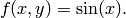
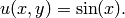

Smooth-aniso-x (Elliptic)¶
Git reference: Benchmark smooth-aniso-x.
We show that one should use (spatially as well as polynomially) anisotropic refinements for solutions containing anisotropy.
Equation solved: Poisson equation
(1)
Domain of interest: Square  .
.
Right-hand side:
(2)
Boundary conditions: Zero Dirichlet on the left and right edges, zero Neumann on the rest of the boundary.
Exact solution:
(3)
Solution:

Below we show meshes obtained using various types of adaptivity. Note the tremendous differences in their performance. The meshes do not correspond to the same level of accuracy since the low-order methods could not achieve the same error as hp-FEM. Therefore, compare not only the number of DOF but also the error level. Convergence graphs for all cases are shown at the end of this section.
Final mesh (h-FEM, p=1, isotropic refinements): 41033 DOF, error 0.22875054074711 %

Final mesh (h-FEM, p=1, anisotropic refinements): 39594 DOF, error 0.0039444224349215 %
Final mesh (h-FEM, p=2, isotropic refinements): 54627 DOF, error 0.0017755772528929 %

Final mesh (h-FEM, p=2, anisotropic refinements): 3141 DOF, error 9.3084842840514e-05 %

Final mesh (hp-FEM, isotropic refinements): 63 DOF, error = 3.6797337289125e-05 %

Final mesh (hp-FEM, anisotropic refinements): 14 DOF, error 3.6797337292196e-05 %, The color pattern means that the polynomial degrees are one and eight in the vertical and horizontal directions, respectively.
DOF convergence graphs:

CPU time convergence graphs: